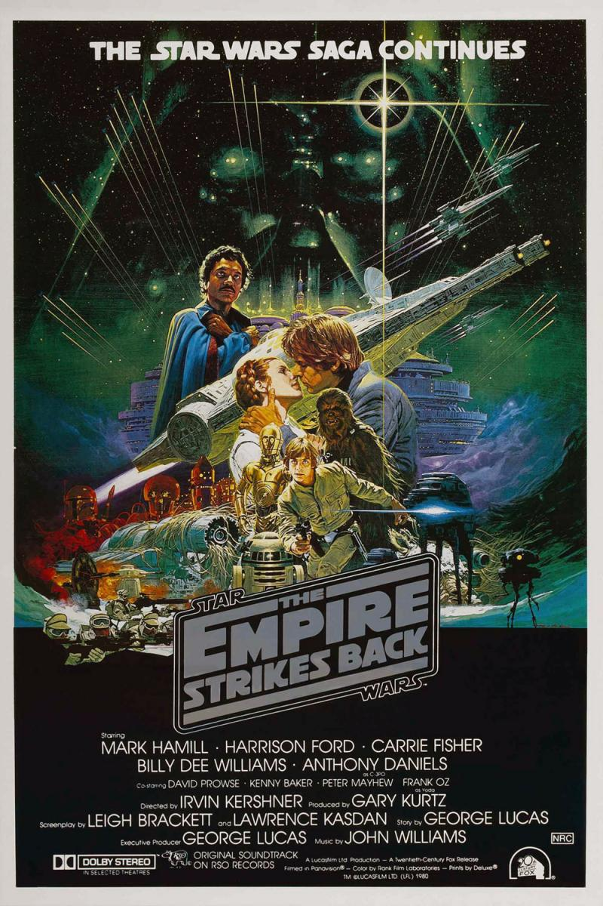

La guerra de las galaxias. Episodio V: El imperio contraataca
Ficha
- Star Wars. Episode V: The Empire Strikes Back
- 1980
- 124 min.
- Estados Unidos
- Irvin Kershner
- Leigh Brackett, Lawrence Kasdan (Historia: George Lucas)
- John Williams
- Peter Suschitzky
- Mark Hamill, Harrison Ford, Carrie Fisher, Frank Oz, Billy Dee Williams, David Prowse, Alec Guinness, Anthony Daniels, Kenny Baker, Peter Mayhew, Jeremy Bulloch, Kenneth Colley, Bruce Boa, Julian Glover, Denis Lawson, Michael Culver, John Ratzenberger, Michael Sheard
- 20th Century Fox
- Ciencia ficción, Aventuras, Aventura espacia, Secuela, Película de culto
- Tras un ataque sorpresa de las tropas imperiales a las bases camufladas de la alianza rebelde, Luke Skywalker, en compañía de R2D2, parte hacia el planeta Dagobah en busca de Yoda, el último maestro Jedi, para que le enseñe los secretos de la Fuerza. Mientras, Han Solo, la princesa Leia, Chewbacca, y C3PO esquivan a las fuerzas imperiales y piden refugio al antiguo propietario del Halcón Milenario, Lando Calrissian, en la ciudad minera de Bespin, donde les prepara una trampa urdida por Darth Vader.
-
Mejor aún -si cabe- que la primera. Ya no dirige Lucas... ¿O sí? Poco importa: Han Solo y la princesa Leia siguen flirteando con un encanto que ya quisieran muchas comedias románticas, aparece el pequeño gran Yoda, y el impresionante Darth Vader sigue provocando una atracción casi irresistible, al tiempo que anuncia una inesperada y genial revelación. En resumen: el maravilloso y entretenidísimo cuento galáctico continúa... y la leyenda de la fuerza -el mito de Star Wars- se expande por todo el universo.
-
La mejor de las películas Star Wars y la que más incita a la reflexión (...) Un espectáculo visual de principio a fin (...)
-
La mejor de la trilogía (...) Un estimulante equilibrio de drama, humor y Profundos Pensamientos
-
Combina derramientos de sangre con encanto, espectáculo con alegría infantil. En su género, es casi perfecta
-
Un impresionante ejemplo de la constante brillantez técnica y del liderazgo del equipo de producción de Lucas